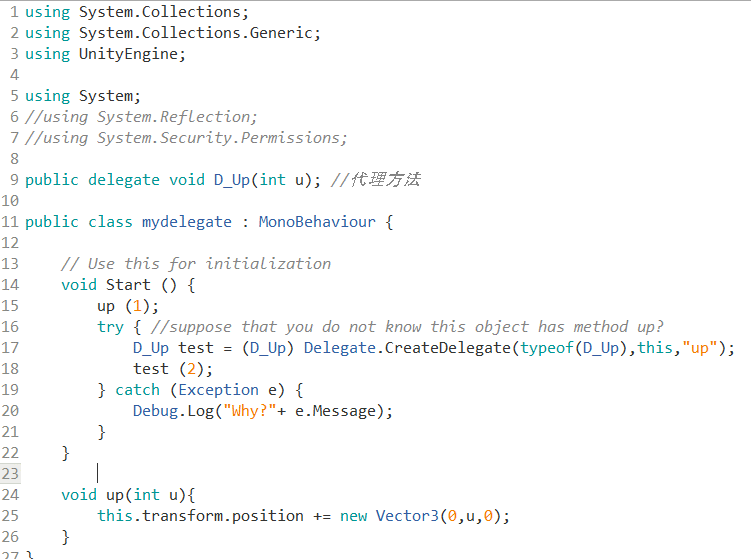

附录 X3-05、反射 与 Unity
Contents
1、什么是反射
Reflection，中文翻译为反射。
这是 dotNet 获取 运行时 类型信息/定义 的方式。dotNet的应用程序由几个部分：‘程序集(Assembly)’、‘模块(Module)’、‘类型(class)’组成，而反射提供一种编程的方式，让程序员可以在程序运行期获得这几个组成部分的定义信息，例如：
Assembly类可以获得正在运行的装配件信息，也可以动态的加载装配件，以及在装配件中查找类型信息，并创建该类型的实例。
System.Type类型表示对象的类型信息，此信息包含对象的所有要素：方法、构造器、属性等等，通过Type类可以得到这些要素的信息，并且调用之。
MethodInfo包含方法的信息，通过这个类可以得到方法的名称、参数、返回值等，并且可以调用之。
诸如此类，还有FieldInfo、EventInfo等等，这些类都包含在System.Reflection命名空间下。
2、命名空间与装配件的区别
Assembly 是物理机制，是dotNet应用程序执行的最小单位，编译出来的 dll、exe 都是装配件
NameSpace 是逻辑机制，是对象命名的空间。一个命名空间可能分布在几个装配件中。
3、运行期得到类型信息的用途
官方说法，反射在以下情况下很有用：
- 需要访问程序元数据中的特性时。
- 检查和实例化程序集中的类型。
- 在运行时构建新类型。 使用 System.Reflection.Emit 中的类。
- 执行后期绑定，访问在运行时创建的类型上的方法。 请参阅主题 “动态加载和使用类型”。
例如：
- 动态创建对象，调用函数
- 根据对象的注解实现语义，如 ORM 实现
- 动态代理的实现，如 RPC，AOP 实现
- 做插件
4、一些代码
4.1 获取类型
获得类型信息有两种方法
- 一种是得到实例对象，这个时侯我仅仅是得到这个实例对象，得到的方式也许是一个object的引用，也许是一个接口的引用，但是我并不知道它的确切类型，我需要了解，那么就可以通过调用System.Object上声明的方法GetType来获取实例对象的类型对象，比如在某个方法内，我需要判断传递进来的参数是否实现了某个接口，如果实现了，则调用该接口的一个方法：
|
|
另外一种获取类型的方法是通过Type.GetType以及Assembly.GetType方法，如：
Type t = Type.GetType(“System.String”);
4.2 动态创建对象
System.Activator提供了方法来根据类型动态创建对象，比如创建一个DataTable：
|
|
4.3 动态调用方法
4.4 动态创建委托
4.5 获取类型定义
System.reflection命名空间包含的几个类，允许你反射（解析）这些元数据表的代码
- System.Reflection.Assembly
- System.Reflection.MemberInfo
- System.Reflection.EventInfo
- System.Reflection.FieldInfo
- System.Reflection.MethodBase
- System.Reflection.ConstructorInfo
- System.Reflection.MethodInfo
- System.Reflection.PropertyInfo
- System.Type
以下是上面几个类的使用方法：
（1）使用Assembly定义和加载程序集，加载在程序集清单中列出模块，以及从此程序集中查找类型并创建该类型的实例。
（2）使用Module了解包含模块的程序集以及模块中的类等，还可以获取在模块上定义的所有全局方法或其他特定的非全局方法。
（3）使用ConstructorInfo了解构造函数的名称、参数、访问修饰符（如pulic 或private）和实现详细信息（如abstract或virtual）等。使用Type的GetConstructors或 GetConstructor方法来调用特定的构造函数。
（4）使用MethodInfo了解方法的名称、返回类型、参数、访问修饰符（如pulic 或private）和实现详细信息（如abstract或virtual）等。使用Type的GetMethods或GetMethod方法来调用特定的方法。
（5）使用FiedInfo了解字段的名称、访问修饰符（如public或private）和实现详细信息（如static）等，并获取或设置字段值。
（6）使用EventInfo了解事件的名称、事件处理程序数据类型、自定义属性、声明类型和反射类型等，添加或移除事件处理程序。
（7）使用PropertyInfo了解属性的名称、数据类型、声明类型、反射类型和只读或可写状态等，获取或设置属性值。
（8）使用ParameterInfo了解参数的名称、数据类型、是输入参数还是输出参数，以及参数在方法签名中的位置等。
- MSDN 反射（C# 编程指南）
- C# 反射中文整理
5、Unity 中的反射
注意事项，不能使用 System.Reflection.Emit
这意味不能在运行时构造新的数据类型
注意事项，性能
反射会严重影响性能
由于 Unity C# 脚本在手机上，编译后并不能动态更新，插件也无法使用。
在 Unity 中，主要应用就是 基于代理的反射技术 ，可以兼顾效率和通用的需要，参考代码：

如果熟悉事件的话，你也可以将一组特定对象的方法放在一个事件中，一起激发哦！例如，把所有部件代码的 Start 方法放入一个 startEvent 的中。
思考题、研讨
-
用反射技术编写类似的函数
- GameObject.SendMessage
- GameObject.SendMessageUpwards
- GameObject.BroadcastMessage
-
分析这些方法的计算成本
-
OnCollisionEntry() 的调用是这样实现的吗？给出理由
-
使用 c# 反射技术列出一个对象的所有方法名称
- 参考阅读： C# 反射的委托创建器
Author 潘茂林
LastMod 2020-12-20